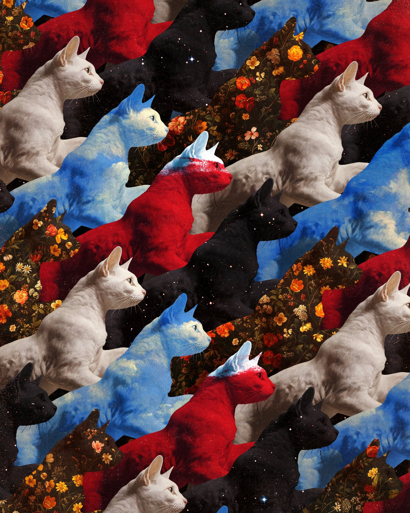

To Whom It May Concern (and to Those Who Clearly Prefer Cats),
We, the undersigned members of the Dog Lovers Society, write to express our disappointment regarding "Copy Cats" by MendezMendez. While we acknowledge its merit, we must ask: Where are the dogs?
The work suggests imitation and society, yet excludes dogs entirely—as if copying is a feline-only trait. This is a narrow and biased portrayal. Dogs have copied humans for centuries. We sit, stay, fetch—without question. If that is not copying, what is?
Dogs symbolize loyalty and community. To exclude us is not just oversight—it is misrepresentation. We are not asking for dominance—just acknowledgment. A Labrador. A terrier. Even a distant German Shepherd would suffice.
Instead, we are left with a cat-only narrative—sleek, confident, and a bit smug.
We urge a follow-up: "Faithful Copies" or "Sit. Stay. Replicate."
Sincerely,
The Dog Lovers Society
Writing credited to @mrc_arte.